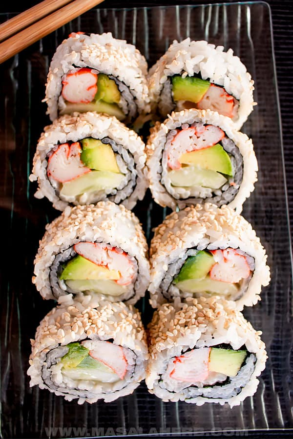

How To Make a California Roll

The California Roll
A California roll is a fresh take on traditional Japanese
rice rolls. Filled with avocado, crab, and cucumber, it's fresh and crunchy
and makes a filling meal. You can use real or imitation crab.
You will love this simple and easy recipe! Lets get cooking.
Ingredients
for 4 servings
2 cups of cooked sushi rice
1/4 cup seasoned rice vinegar
4 half sheets sushi grade nori
1 teaspoon sesame seed,(optional)
8 pieces imitation crab
1 small cucumber, cut into matchsticks. How to cut into matchsticks
1 avocado, thinly sliced
Now lets put it all together
- Season the sushi rice with the rice vinegar,fanning and stirring
until room temperature.
- On a rolling mat, place one sheet of nori with the
rough side facing upwards.
- Wet your hands and grab a handful of rice and place it on the nori. Spread
the rice evenly throughout the nori without mashing the rice down.
Season rice with a pinch of sesame seeds, if using, then flip it over
so the nori is facing upwards.
- Arrange, in a horizontal row 1 inch (2.5 cm) from the bottom, the crab followed by
a row of avocado and a row of cucumber.
- Grabbing both nori and the mat, roll the mat over the filling so the extra space
at the bottom touches the other side, squeezing down to make a nice tight roll. Squeeze down along
the way to keep the roll from holding its shape.
- Transfer the roll onto a cutting board. Rub a knife on a damp paper\
towel before slicing the roll into six equal portions.
- Enjoy!
Just like that you make sushi from home!
You can check out some of our other delicious recipes clicking here